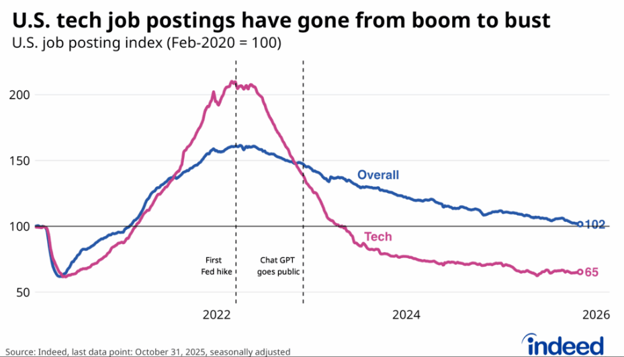

--- 
layout: null
---
<div style="background-color: #e0f2fe; background-image: linear-gradient(180deg, #e0f2fe 0%, #bae6fd 100%); color: #0f172a; padding: 45px 30px; font-family: -apple-system, BlinkMacSystemFont, 'Segoe UI', Helvetica, Arial, sans-serif; min-height: 100vh; border-radius: 8px; max-width: 800px; margin: 0 auto; line-height: 1.7;"> 

  <!-- COVER IMAGE -->
  <div align="center" style="margin-bottom: 40px;">
    
  </div>

  <!-- ARTICLE TITLE -->
  <h1 style="color: #0369a1; font-size: 32px; font-weight: 800; margin-bottom: 25px; line-height: 1.3; border-bottom: none;">AI, Profit Maximization and the IT Professionals</h1>

  <!-- INTRODUCTION -->
   <p style="text-indent: 30px; font-size: 17px; line-height: 1.8; margin-bottom: 22px;">
    It is a solemn obligation of every corporation to generate profit for its stakeholders. 
    In the corporate world, profit maximization is not merely a slogan; it is the guiding principle 
    behind strategy, investment, restructuring, and innovation. Executives are expected to increase 
    revenue, improve efficiency, and reduce costs without compromising quality, compliance, 
    or ethical responsibility. Among the many paths to profitability, cost reduction has always
     remained one of the most powerful.</p>

  <p style="text-indent: 30px; font-size: 17px; line-height: 1.8; margin-bottom: 22px;">
     With the advent of artificial intelligence, however, the rules of the game have changed dramatically.
     AI is no longer a futuristic idea discussed only in research labs, academic conferences, or science fiction. 
     It has entered boardrooms, software development pipelines, customer service platforms, data analytics workflows, 
     cloud infrastructure, and decision-making systems. Corporations have discovered that AI can complete many tasks faster, 
     cheaper, and in some cases more consistently than human labor. As a result, many technology companies 
     are now restructuring their workforce while increasing investment in AI infrastructure.</p>

  <p style="text-indent: 30px; font-size: 17px; line-height: 1.8; margin-bottom: 22px;">
     The labor market is already showing signs of this transformation. A recent Indeed graph titled 
     U.S. Tech Job Postings Have Gone from Boom to Bust shows a striking contrast between overall U.S. 
     job postings and technology job postings. Using February 2020 as the baseline index of 100, 
     overall U.S. job postings rose after the pandemic shock, peaked around 2022, and later declined 
     toward roughly 102 by late 2025. In other words, the broader job market returned close to 
     its pre-pandemic baseline. Technology job postings, however, followed a much more alarming path. 
     They surged above 200 during the post-pandemic hiring boom, but then collapsed to about 65 by October 2025.
      That means tech job postings were not merely cooling from an overheated market; they had fallen far 
      below their pre-pandemic level.</p>

  <p style="text-indent: 30px; font-size: 17px; line-height: 1.8; margin-bottom: 22px;">
     This does not mean that AI alone caused the decline. That would be too simplistic. 
     Interest-rate hikes, over hiring during the pandemic, cost-cutting pressure, investor expectations,
     and post-pandemic normalization all contributed to the downturn. However, AI has arrived at 
     precisely at the moment when corporations are under pressure to do more with less. In such an 
     environment, AI becomes more than technology. It becomes a strategic instrument for restructuring labor, 
     reducing costs, and redefining productivity.</p>
    
    <p style="text-indent: 30px; font-size: 17px; line-height: 1.8; margin-bottom: 22px;">
      Recent reporting reinforces this concern. BBC News reported that Oracle cut about 21,000 jobs as 
      it embraced AI, reducing its full-time employee count from approximately 162,000 to 141,000. 
      The Guardian also reported that Oracle was cutting thousands of jobs while increasing AI-related spending. 
      These examples reflect a broader pattern in which large technology firms reduce headcount 
      in some areas while redirecting resources toward AI, cloud infrastructure, and automation.</p>
    
    <p style="text-indent: 30px; font-size: 17px; line-height: 1.8; margin-bottom: 22px;">
     The Low-Down Blog, summarizing concerns about Big Tech’s AI-driven workforce shift, offers an 
     important caution. It argues that companies may be moving too quickly in trading human workers for
     AI systems, especially when many organizations have not yet fully demonstrated how to optimize AI’s impact.
     It also warns that employees themselves are often essential to making AI work effectively inside real organizations. 
     Removing too many of them too quickly may damage institutional knowledge, morale, implementation quality,
     and long-term innovation.</p>

    <p style="text-indent: 30px; font-size: 17px; line-height: 1.8; margin-bottom: 22px;">
      Looking into the chasm with fear does not change reality. Denying the transformation will not stop it.
      The pragmatic response is to recognize the direction of the wind and adjust the sail accordingly. 
      If the corporate mantra is profit maximization, then the IT professional mantra must be evolution. 
      IT professionals must learn to treat AI not only as a threat, but also as a force multiplier. 
      Those who resist AI may find themselves displaced by it. Those who master it may become more valuable than ever.
    </p>

    <p style="text-indent: 30px; font-size: 17px; line-height: 1.8; margin-bottom: 22px;">
      The future will not necessarily belong to the person who can perform every technical task manually.
      It will belong to the person who understands how to use AI intelligently, ethically, and strategically. 
      A programmer who uses AI to accelerate development, a data analyst who combines domain knowledge with
      machine learning tools, a project manager who identifies responsible automation opportunities, and 
      a business leader who aligns AI with organizational goals will remain highly relevant. The key is 
      not merely learning AI tools at a superficial level, but understanding how those tools fit into real 
      business problems.</p>

    <p style="text-indent: 30px; font-size: 17px; line-height: 1.8; margin-bottom: 22px;">
      This shift also demands a change in mindset. IT professionals must move from task execution to problem solving, 
      from tool usage to system thinking, and from technical comfort zones to continuous learning. 
      AI will continue to improve. It will become faster, cheaper, more integrated, and more capable. 
      The professional who stops learning will fall behind. The professional who keeps adapting will find 
      new opportunities inside the very disruption that threatens others.</p>

    <p style="text-indent: 30px; font-size: 17px; line-height: 1.8; margin-bottom: 22px;">
      At the same time, corporations must exercise caution. Replacing workers too aggressively may
      produce short-term savings, but it can also create long-term risks. Human employees carry institutional memory, 
      customer understanding, ethical judgment, creativity, and operational experience that cannot be instantly 
      replicated by machines. AI can accelerate work, but people are still needed to decide what work matters, 
      how technology should be governed, and how innovation should serve human needs.</p> 
    
    <p style="text-indent: 30px; font-size: 17px; line-height: 1.8; margin-bottom: 22px;">
      The Indeed graph should therefore be read not only as a warning, but also as a call to action. 
      The boom period created an illusion of unlimited opportunity in technology. The current bust reminds 
      us that the labor market can turn quickly. AI intensifies that reality by changing what companies 
      expect from workers. The question is no longer whether IT professionals can continue doing the same 
      work in the same way. The question is whether they can evolve quickly enough to remain essential in 
      a new technological order.</p>

  
  <!-- CONCLUSION -->
  <h2 style="color: #0369a1; font-size: 24px; font-weight: 700; margin-top: 30px; margin-bottom: 15px;">Conclusion</h2>

  <p style="text-indent: 30px; font-size: 17px; line-height: 1.8; margin-bottom: 22px;">
    Artificial intelligence is not merely a technological upgrade; it is an economic and professional 
    turning point. It is forcing corporations to rethink labor, productivity, cost, and competitiveness.
    At the same time, it is forcing IT professionals to rethink their own value. The safest path forward
    is not fear, denial, or nostalgia for the old job market. The safest path is adaptation.</p>

  <p style="text-indent: 30px; font-size: 17px; line-height: 1.8; margin-bottom: 22px;">
    The decline in U.S. tech job postings, as shown by Indeed’s graph, is a serious signal. 
    It suggests that the traditional technology labor market has already moved from expansion to contraction. 
    AI may not be the only cause, but it is becoming one of the most powerful forces shaping what comes next. 
    For corporations, the challenge is to use AI without destroying the human knowledge needed to make AI useful. 
    For IT professionals, the challenge is to evolve from being task performers into AI-enabled problem solvers.
  </p>
  
   <p style="text-indent: 30px; font-size: 17px; line-height: 1.8; margin-bottom: 22px;">
    AI should not be seen only as a foe. It should be seen as a powerful instrument that can expand human capability when used wisely. 
    In a world where corporations seek to maximize profit, IT professionals must seek to maximize their own relevance. The future will 
    not belong to those who merely compete against AI, but to those who learn how to command it.</p>
  

  <!-- REFERENCES -->
  <div align="center">
    <h2 style="color: #0369a1; font-size: 22px; font-weight: 700; border-bottom: none; margin-bottom: 20px;">References</h2>
  </div>
  
  <ul style="list-style-type: none; padding-left: 0;">
    <li style="margin-bottom: 15px;">
      <b>BBC News (2026, June 23).</b> <i>Tech giant Oracle cuts 21,000 jobs as it embraces AI. </i> British Broadcasting Corporation. 
      <a href="https://www.bbc.com/news/articles/c4gy0x0j5deo" style="color: #025a87; font-weight: 600; text-decoration: underline;">Open Article</a>
    </li>
    <li style="margin-bottom: 15px;">
      <b>Indeed (2025, ).</b> <i>U.S. tech job postings have gone from boom to bust: U.S. job posting index .</i> [Graph] Indeed Hiring Lab. 
      <a href="https://www.hiringlab.org/2025/07/30/the-us-tech-hiring-freeze-continues/" style="color: #025a87; font-weight: 600; text-decoration: underline;">Open Article</a>
    </li>
     <li style="margin-bottom: 15px;">
      <b>Low, J.(2026, May 1).</b> <i>Big Tech is trading its workforce for AI. They may regret that exchange.</i> The Low-Down Blog. 
      <a href="https://www.thelowdownblog.com/2026/05/big-tech-is-trading-its-workforce-for.html" style="color: #025a87; font-weight: 600; text-decoration: underline;">Open Article</a>
    </li>
     <li style="margin-bottom: 15px;">
      <b>Stable, C.(2025, July 30).</b> <i>The US tech hiring freeze continues. Indeed Hiring Lab.</i> Indeed. 
      <a href="https://www.hiringlab.org/2025/07/30/the-us-tech-hiring-freeze-continues/" style="color: #025a87; font-weight: 600; text-decoration: underline;">Open Article</a>
    </li>
     <li style="margin-bottom: 15px;">
      <b>The Gaurdian (2026, April 1).</b> <i>US tech firm Oracle cuts thousands of jobs as it steps up AI spending.</i> The Guardian. 
      <a href="https://www.theguardian.com/technology/2026/apr/01/us-tech-firm-oracle-cuts-thousands-of-jobs-as-it-steps-up-ai-spending-larry-ellison" style="color: #025a87; font-weight: 600; text-decoration: underline;">Open Article</a>
    </li>
  </ul>

  <!-- ==================================================== -->
  <!--              CUSDIS COMMENT SECTION                  -->
  <!-- ==================================================== -->

  <div style="
    max-width: 100%;
    margin: 35px auto 20px auto;
    padding: 18px 20px;
    background-color: rgba(255,255,255,0.55);
    border: 1.5px solid rgba(3,105,161,0.25);
    border-radius: 8px;
    box-shadow: inset 0 1px 3px rgba(0,0,0,0.08);
    min-height: 260px;
    overflow: visible;
  ">

    <h3 style="
      color: #0369a1;
      font-size: 20px;
      font-weight: 700;
      margin-top: 0;
      margin-bottom: 16px;
      border-bottom: 2px solid rgba(3,105,161,0.22);
      padding-bottom: 8px;
    ">
      💬 Leave your comments here
    </h3>

    <div style="
      width: 100%;
      min-height: 220px;
      overflow: visible;
    ">
      <div id="cusdis_thread"
        data-host="https://cusdis.com"
        data-app-id="28edf075-3a11-48a9-8654-f0b3b3a791fd"
        data-page-id="AI-Profit-Maximization"
        data-page-url="https://bishwarai5-commits.github.io/BishwaR-Page/AI-Profit-Maximization.html"
        data-page-title="AI, Profit Maximization and the IT Professionals"
        data-theme="light">
      </div>
    </div>

  </div>

  <script async defer src="https://cusdis.com/js/cusdis.es.js"></script>

  <!-- ==================================================== -->

  <hr style="border: 0; height: 1px; background-image: linear-gradient(to right, rgba(3,105,161,0), rgba(3,105,161,0.2), rgba(3,105,161,0)); margin-top: 10px; margin-bottom: 20px;">

  <!-- BACK TO HOME BUTTON -->
  <div align="center" style="margin-top: 25px;">
    <a href="https://bishwarai5-commits.github.io/BishwaR-Page/" style="display: inline-block; padding: 12px 24px; font-size: 16px; font-weight: bold; color: #ffffff; background-color: #0369a1; border-radius: 6px; text-decoration: none; box-shadow: 0 4px 12px rgba(3,105,161,0.2);">← Back to Homepage</a>
  </div>

</div>
```
